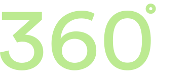

Blender Heerlen is een culturele supermarkt, een creatief clubhuis, een melting pot, een indoor markt, een open en urban space voor iedereen.
We houden ervan om iedereen met mekaar te verbinden. Kunstenaars, winkeliers, creatieve ondernemers, artiesten en
klanten zoals jij en ik.
Welkom in het Maankwartier, welkom bij Blender Heerlen.
Kopen, verkopen, huren, performen, workshop geven of volgen?
Wij houden van enthousiasme en creativiteit.
Vul jij het contactformulier in? Dan nemen wij binnen de 8u contact met je op!
Nog niet langs kunnen komen en toch benieuzd naar hoe dat er nou uit ziet? Wij hebben daar wat op voorzien!
Zet digitaal een stap in blender heerlen en bekijk de 360° tour!

Win je atelier!
Met de wedstrijd die we gelanceerd hebben in De Limburger (Via Parkstad) geven wij iedereen de kans om een atelier te winnen voor 6 maanden!
Alle voorwaarden voor deze wedstrijd kun je vinden door op de knop hieronder te klikken!